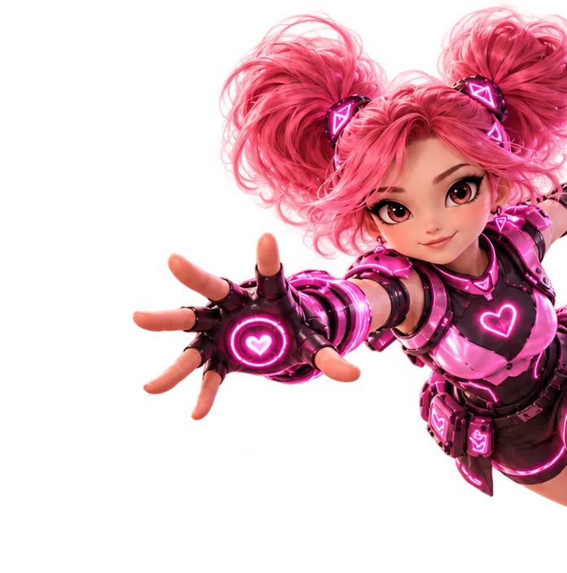

01 ↘
?
FIND THE REAL PROBLEM.
We ask better questions, map the business, and pinpoint the gaps that actually matter.
THE POSSIBLE DEPARTMENT / OPEN FOR BIG IDEAS
Anyone can put a website online. Can yours bring in customers, close business, or run smarter? We turn the “now what?” into an actual plan — and help make it happen.

WE GET THE QUESTION YOU'RE ACTUALLY ASKING.
Maybe you've got a brilliant idea, a quiet inbox, a team drowning in admin, or a website doing absolutely nothing. You don't need a list of buzzwords. You need someone who can see the opportunity and build the route there.
Different specialties, one joined-up answer. Pick the challenge. We'll show you what better looks like.
You don't have to arrive with a perfect business plan. We'll find what's worth building, why people would buy, and what to do first.
We don't hand you a fancy deck and disappear. We find the right problem, engineer the right solution, and help you measure what changes.
We ask better questions, map the business, and pinpoint the gaps that actually matter.
Strategy, sites, AI workflows, acquisition funnels, and the connective tissue between them.
Launch, test, improve. Measure inquiries, conversion, time saved, and pipeline health.
BECAUSE “WE HAVE A WEBSITE”
SHOULDN'T BE THE WHOLE BUSINESS STRATEGY.
Tell us what's happening. We'll turn the messy version into a useful starting point — a brief you can actually do something with.
Whether it's a messy startup idea or an established business that needs a serious upgrade, the next move starts with one clear conversation.